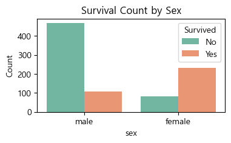
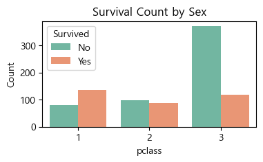
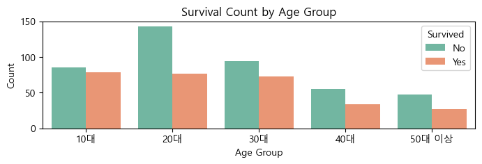
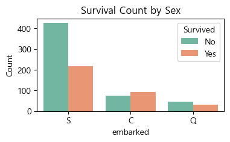
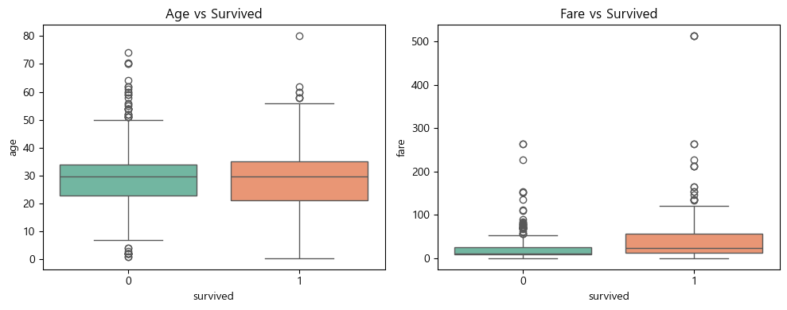
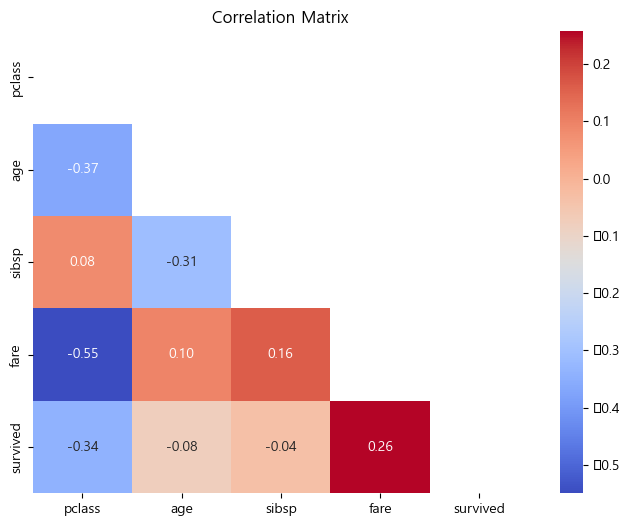

# 라이브러리 불러오기
import numpy as np
import pandas as pd
import matplotlib.pyplot as plt
import seaborn as sns타이타닉 데이터 분석
1. 데이터셋
- RMS 타이타닉은 영국의 화이트 스타 라인이 운영한 북대서양 횡단 여객선으로, 1912년 4월 10일 첫 출항하였다. 영국의 사우샘프턴을 떠나 미국의 뉴욕으로 향하던 중에 4월 15일 빙산과 충돌하여 침몰하였으며, 이로 인해 1,514명이 사망한 것으로 알려져 있다.
- 타이타닉 데이터를 분석하여 생존에 영향을 준 요인을 파악하고, 이를 바탕으로 생존 여부를 예측하는 모델을 학습해보자.
데이터
- seaborn 라이브러리에서 제공하는 titanic 데이터 사용
- survived: 생존 여부(0, 1)
- pclass: 객실 등급(1, 2, 3)
- sex: 성별
- age: 나이
- sibsp: 함께 탑승한 형제자매, 배우자 수
- parch: 함께 탑승한 부모, 자식 수
- fare: 요금
- embarked: 탑승 항구(S, C, Q)
- class: 객실 등급(First, Second, Third)
- who: 사람 구분(man, woman, child)
- adult_male: 성인 남자 여부(True, False)
- deck: 갑판
- embark_town: 탑승 항구(Southhampton, Cherbourg, Queenstown)
- alive: 생존여부(no, yes)
- alone: 1인 탑승 여부(True, False)
2. 데이터 확인 및 전처리
import matplotlib.pyplot as plt
from matplotlib import font_manager, rc
# 윈도우 기본 한글 폰트 경로 (확인 후 변경 가능)
font_path = "C:/Windows/Fonts/malgun.ttf"
font_name = font_manager.FontProperties(fname=font_path).get_name()
rc('font', family=font_name)#!pip install scikit-learn# 데이터 불러오기
from sklearn.model_selection import train_test_split
df = sns.load_dataset('titanic')
df.head(3)| survived | pclass | sex | age | sibsp | parch | fare | embarked | class | who | adult_male | deck | embark_town | alive | alone | |
|---|---|---|---|---|---|---|---|---|---|---|---|---|---|---|---|
| 0 | 0 | 3 | male | 22.0 | 1 | 0 | 7.2500 | S | Third | man | True | NaN | Southampton | no | False |
| 1 | 1 | 1 | female | 38.0 | 1 | 0 | 71.2833 | C | First | woman | False | C | Cherbourg | yes | False |
| 2 | 1 | 3 | female | 26.0 | 0 | 0 | 7.9250 | S | Third | woman | False | NaN | Southampton | yes | True |
# 데이터 확인
df.info()<class 'pandas.core.frame.DataFrame'>
RangeIndex: 891 entries, 0 to 890
Data columns (total 15 columns):
# Column Non-Null Count Dtype
--- ------ -------------- -----
0 survived 891 non-null int64
1 pclass 891 non-null int64
2 sex 891 non-null object
3 age 714 non-null float64
4 sibsp 891 non-null int64
5 parch 891 non-null int64
6 fare 891 non-null float64
7 embarked 889 non-null object
8 class 891 non-null category
9 who 891 non-null object
10 adult_male 891 non-null bool
11 deck 203 non-null category
12 embark_town 889 non-null object
13 alive 891 non-null object
14 alone 891 non-null bool
dtypes: bool(2), category(2), float64(2), int64(4), object(5)
memory usage: 80.7+ KBdf.describe()| survived | pclass | age | sibsp | parch | fare | |
|---|---|---|---|---|---|---|
| count | 891.000000 | 891.000000 | 714.000000 | 891.000000 | 891.000000 | 891.000000 |
| mean | 0.383838 | 2.308642 | 29.699118 | 0.523008 | 0.381594 | 32.204208 |
| std | 0.486592 | 0.836071 | 14.526497 | 1.102743 | 0.806057 | 49.693429 |
| min | 0.000000 | 1.000000 | 0.420000 | 0.000000 | 0.000000 | 0.000000 |
| 25% | 0.000000 | 2.000000 | 20.125000 | 0.000000 | 0.000000 | 7.910400 |
| 50% | 0.000000 | 3.000000 | 28.000000 | 0.000000 | 0.000000 | 14.454200 |
| 75% | 1.000000 | 3.000000 | 38.000000 | 1.000000 | 0.000000 | 31.000000 |
| max | 1.000000 | 3.000000 | 80.000000 | 8.000000 | 6.000000 | 512.329200 |
# # 데이터 전처리 : 결측값 확인
print(df.isnull().sum())survived 0
pclass 0
sex 0
age 177
sibsp 0
parch 0
fare 0
embarked 2
class 0
who 0
adult_male 0
deck 688
embark_town 2
alive 0
alone 0
dtype: int64# 결측치 처리
df1 = df[['survived', 'pclass', 'sex', 'age', 'sibsp', 'fare', 'embarked']].copy()
df1.head()| survived | pclass | sex | age | sibsp | fare | embarked | |
|---|---|---|---|---|---|---|---|
| 0 | 0 | 3 | male | 22.0 | 1 | 7.2500 | S |
| 1 | 1 | 1 | female | 38.0 | 1 | 71.2833 | C |
| 2 | 1 | 3 | female | 26.0 | 0 | 7.9250 | S |
| 3 | 1 | 1 | female | 35.0 | 1 | 53.1000 | S |
| 4 | 0 | 3 | male | 35.0 | 0 | 8.0500 | S |
df1.isna().sum()survived 0
pclass 0
sex 0
age 177
sibsp 0
fare 0
embarked 2
dtype: int64# age는 평균으로 대체
df1['age'] = df1['age'].fillna(df1['age'].mean())# embarked는 최빈값으로 대체
df1['embarked'] = df1['embarked'].fillna(df1['embarked'].mode()[0])df1.head()| survived | pclass | sex | age | sibsp | fare | embarked | |
|---|---|---|---|---|---|---|---|
| 0 | 0 | 3 | male | 22.0 | 1 | 7.2500 | S |
| 1 | 1 | 1 | female | 38.0 | 1 | 71.2833 | C |
| 2 | 1 | 3 | female | 26.0 | 0 | 7.9250 | S |
| 3 | 1 | 1 | female | 35.0 | 1 | 53.1000 | S |
| 4 | 0 | 3 | male | 35.0 | 0 | 8.0500 | S |
# 확인
print(df1.isnull().sum())survived 0
pclass 0
sex 0
age 0
sibsp 0
fare 0
embarked 0
dtype: int643. 학습/평가 데이터 분할
- 학습 데이터와 평가 데이터를 7:3 비율로 분할함
# 5. 데이터 분할
from sklearn.model_selection import train_test_split
from sklearn.neighbors import KNeighborsClassifier
from sklearn.preprocessing import StandardScaler
from sklearn.metrics import classification_report, confusion_matrix, accuracy_score# 학습/평가 데이터 분할 (7:3 비율)
X = df1.drop('survived', axis=1) # feature
y = df1['survived'] # target
from sklearn.model_selection import train_test_split
X_train, X_test, y_train, y_test = train_test_split(X, y, test_size=0.3, random_state=42)X_train| pclass | sex | age | sibsp | fare | embarked | |
|---|---|---|---|---|---|---|
| 445 | 1 | male | 4.000000 | 0 | 81.8583 | S |
| 650 | 3 | male | 29.699118 | 0 | 7.8958 | S |
| 172 | 3 | female | 1.000000 | 1 | 11.1333 | S |
| 450 | 2 | male | 36.000000 | 1 | 27.7500 | S |
| 314 | 2 | male | 43.000000 | 1 | 26.2500 | S |
| ... | ... | ... | ... | ... | ... | ... |
| 106 | 3 | female | 21.000000 | 0 | 7.6500 | S |
| 270 | 1 | male | 29.699118 | 0 | 31.0000 | S |
| 860 | 3 | male | 41.000000 | 2 | 14.1083 | S |
| 435 | 1 | female | 14.000000 | 1 | 120.0000 | S |
| 102 | 1 | male | 21.000000 | 0 | 77.2875 | S |
623 rows × 6 columns
4. 데이터 탐색
# 요약 통계량 확인
df1_train = pd.concat([X_train, y_train], axis=1)
df1_train.describe()| pclass | age | sibsp | fare | survived | |
|---|---|---|---|---|---|
| count | 623.000000 | 623.000000 | 623.000000 | 623.000000 | 623.000000 |
| mean | 2.341894 | 29.344479 | 0.576244 | 31.840730 | 0.370787 |
| std | 0.819945 | 13.028013 | 1.216267 | 51.027372 | 0.483404 |
| min | 1.000000 | 0.420000 | 0.000000 | 0.000000 | 0.000000 |
| 25% | 2.000000 | 22.000000 | 0.000000 | 7.925000 | 0.000000 |
| 50% | 3.000000 | 29.699118 | 0.000000 | 14.454200 | 0.000000 |
| 75% | 3.000000 | 35.000000 | 1.000000 | 30.750000 | 1.000000 |
| max | 3.000000 | 80.000000 | 8.000000 | 512.329200 | 1.000000 |
# survived와 변수 비교하여 분석
plt.figure(figsize=(4,2))
sns.countplot(data=df, x='sex', hue='survived', palette='Set2')
plt.title('Survival Count by Sex')
plt.xlabel('sex')
plt.ylabel('Count')
plt.legend(title='Survived', labels=['No', 'Yes'])
plt.figure(figsize=(4,2))
sns.countplot(data=df, x='pclass', hue='survived', palette='Set2')
plt.title('Survival Count by Sex')
plt.xlabel('pclass')
plt.ylabel('Count')
plt.legend(title='Survived', labels=['No', 'Yes'])
bins = [0, 19, 29, 39, 49, 120]
labels = ['10대', '20대', '30대', '40대', '50대 이상']
df['age_group'] = pd.cut(df['age'], bins=bins, labels=labels, right=True, include_lowest=True)
plt.figure(figsize=(8, 2))
sns.countplot(data=df, x='age_group', hue='survived', palette='Set2')
plt.title('Survival Count by Age Group')
plt.xlabel('Age Group')
plt.ylabel('Count')
plt.legend(title='Survived', labels=['No', 'Yes'])
plt.show()
plt.figure(figsize=(4,2))
sns.countplot(data=df, x='embarked', hue='survived', palette='Set2')
plt.title('Survival Count by Sex')
plt.xlabel('embarked')
plt.ylabel('Count')
plt.legend(title='Survived', labels=['No', 'Yes'])
plt.show()



plt.figure(figsize=(10, 4))
# 나이 vs 생존
plt.subplot(1, 2, 1)
sns.boxplot(x='survived', y='age', data=df1_train, palette='Set2')
plt.title('Age vs Survived')
# 요금 vs 생존
plt.subplot(1, 2, 2)
sns.boxplot(x='survived', y='fare', data=df1_train, palette='Set2')
plt.title('Fare vs Survived')
plt.tight_layout()
plt.show()C:\Users\Public\Documents\ESTsoft\CreatorTemp\ipykernel_10616\1835366976.py:5: FutureWarning:
Passing `palette` without assigning `hue` is deprecated and will be removed in v0.14.0. Assign the `x` variable to `hue` and set `legend=False` for the same effect.
sns.boxplot(x='survived', y='age', data=df1_train, palette='Set2')
C:\Users\Public\Documents\ESTsoft\CreatorTemp\ipykernel_10616\1835366976.py:10: FutureWarning:
Passing `palette` without assigning `hue` is deprecated and will be removed in v0.14.0. Assign the `x` variable to `hue` and set `legend=False` for the same effect.
sns.boxplot(x='survived', y='fare', data=df1_train, palette='Set2')
# 상관계수
corr_matrix = df[['pclass', 'age', 'sibsp', 'fare', 'survived']].corr()
upp_mat = np.triu(corr_matrix)
# 상관계수 출력
print(corr_matrix) pclass age sibsp fare survived
pclass 1.000000 -0.369226 0.083081 -0.549500 -0.338481
age -0.369226 1.000000 -0.308247 0.096067 -0.077221
sibsp 0.083081 -0.308247 1.000000 0.159651 -0.035322
fare -0.549500 0.096067 0.159651 1.000000 0.257307
survived -0.338481 -0.077221 -0.035322 0.257307 1.000000# 표현
plt.figure(figsize=(8, 6))
sns.heatmap(corr_matrix, annot=True, mask=upp_mat, cmap='coolwarm', fmt=".2f")
plt.title('Correlation Matrix')
plt.show()C:\Users\default.DESKTOP-VHFHFGU\anaconda3\envs\myenv\Lib\site-packages\seaborn\utils.py:61: UserWarning: Glyph 8722 (\N{MINUS SIGN}) missing from font(s) Malgun Gothic.
fig.canvas.draw()
C:\Users\default.DESKTOP-VHFHFGU\anaconda3\envs\myenv\Lib\site-packages\IPython\core\pylabtools.py:170: UserWarning: Glyph 8722 (\N{MINUS SIGN}) missing from font(s) Malgun Gothic.
fig.canvas.print_figure(bytes_io, **kw)
5. 분류모델 학습
from sklearn.neighbors import KNeighborsClassifier
from sklearn.model_selection import cross_val_score, train_test_split
from sklearn.metrics import accuracy_score, precision_score, recall_score# 0. 범주형 변수 숫자로 변환
df1['sex'] = df1['sex'].map({'female': 0, 'male': 1})
df1['embarked'] = df1['embarked'].map({'S': 0, 'C': 1, 'Q': 2})# 상관관계가 존재하는 특성(feature) 선택
features = ['pclass', 'age', 'sibsp', 'fare']
X_train = df1_train[features] # 1. Feature/Target 분리
X = df1.drop(['survived'], axis=1) # survived 제외
y = df1['survived'] # target은 0/1# 2. 학습/평가 데이터 분할 (7:3)
X_train, X_test, y_train, y_test = train_test_split(X, y, test_size=0.3, random_state=42)# 3. 최적의 k 찾기
k_range = range(1, 20, 2) # 1, 3, 5, ..., 19
k_scores = []
for k in k_range:
knn = KNeighborsClassifier(n_neighbors=k)
scores = cross_val_score(knn, X_train, y_train, cv=5, scoring='accuracy')
k_scores.append(scores.mean())
print(f"k = {k}일 때 평균 정확도: {scores.mean():.3f}")k = 1일 때 평균 정확도: 0.650
k = 3일 때 평균 정확도: 0.682
k = 5일 때 평균 정확도: 0.679
k = 7일 때 평균 정확도: 0.705
k = 9일 때 평균 정확도: 0.695
k = 11일 때 평균 정확도: 0.701
k = 13일 때 평균 정확도: 0.706
k = 15일 때 평균 정확도: 0.698
k = 17일 때 평균 정확도: 0.697
k = 19일 때 평균 정확도: 0.695# 모델 성능이 가장 좋은 k 값 선택
best_k = k_range[k_scores.index(max(k_scores))]
print(f"최적의 k 값은 {best_k}이며, 평균 정확도는 {max(k_scores):.3f}")최적의 k 값은 13이며, 평균 정확도는 0.706# K-NN 분류모델 생성 및 학습
knn = KNeighborsClassifier(n_neighbors=best_k)
knn.fit(X_train, y_train)
from sklearn.metrics import accuracy_score, precision_score, recall_score
#학습데이터로 학습한 분류모델에 평가데이터를 입력하여 클래스 분류
y_pred = knn.predict(X_test)
# 분류모델 평가 : 정확도, 정밀도, 재현도
from sklearn.metrics import accuracy_score, precision_score, recall_score
accuracy =accuracy_score(y_test, y_pred)
precision = precision_score(y_test, y_pred, average='micro')
recall = recall_score(y_test, y_pred, average='micro')
print(f"정확도 : {accuracy:.3f}")
print(f"정밀도 : {precision:.3f}")
print(f"재현율 : {recall:.3f}")정확도 : 0.694
정밀도 : 0.694
재현율 : 0.6946. 회귀모델 평가
- CNN 분류 모델의 성능 평가 결과, 정확도는 0.694로, 전체 데이터 중 약 69.4%를 올바르게 예측했다는 의미를 가진다.
- 정밀도 역시 0.694로, 모델이 양성이라고 판단한 예측 중 실제로 맞춘 비율이 69.4%임을 나타낸다.
- 재현율도 0.694로, 실제 양성 데이터 중에서 모델이 제대로 찾아낸 비율이 동일하게 69.4%였다.
- 세 지표가 모두 동일하다는 점은 예측이 특정 클래스에 치우치지 않고 균형 있게 작동했음을 시사한다. 하지만 이 수치는 뛰어난 성능이라고 보긴 어려우며, 개선 여지가 충분히 있다. 예를 들어, 데이터 전처리나 하이퍼파라미터 조정, 모델 구조 변경 등을 통해 성능을 높일 수 있다.
- 종합적으로 봤을 때, 모델은 기본적인 분류 능력을 갖추었지만 실전 적용을 위해선 추가 개선이 필요하다.